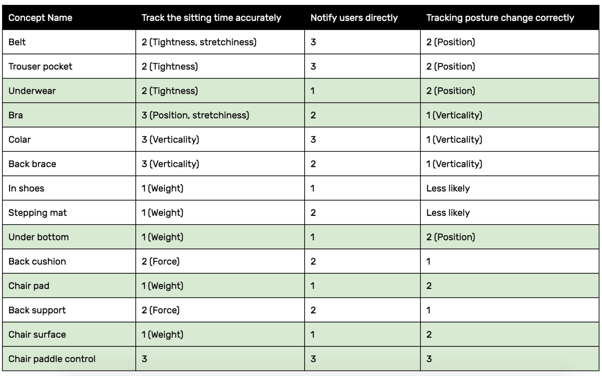

The topic of my thesis project is healthy working and sitting behaviors building .
KEYWORDS
Interaction Design, Human Centered Design, User Research, Product Design, Internet of Things, Mobile APP
Overview
PROJECT TYPE
Master's Thesis Project
TIMLINE
April - December 2019
MENTORS
Elisa Vargas(Motorola Solutions)
Jim Wicks(Northwestern)
Amy Schwartz(IDEO)

Outcome
Discover
Research Process

Research Findings
Key Insights
1. A single touchpoint can not make people mindful of all of the factors that result in back pain.
2. People are incorporating mobile and fixed activities into their schedules as a workaround to prevent back pain.
3. Realizing a bad sitting posture might be humiliating reminds people to keep a good posture in the work environment.
Target User Group
People who self-diagnosed that their back pain influences work productivity and try to solve it with assistance products.
Refined Scope
The goal is to
prevent people’s back pain by tracking people’s sitting habits and work schedule to build healthier and more productive day-to-day work behaviors.
Pain Points
#1 When should I take a break?
For working professionals, they always sit prolonged brought by focused working. The time they intend to stand up or stretch their bodies is when the things on their hands are done. But at that point, their body has been stiff and wrong mechanics have been accumulated which brought tensions in muscles.

#2 How to pose in an ergonomically good way?
Without a mirror place on the side, it is not easy to self-monitor the sitting posture.The healthy stretching instructions in the office are humiliating to follow in public and the space is limited. So it is not matching with the scenarios when people actually need to take a stretch. And people desire to do certain stretchings that they could do in their work station.

#3 How long could I sit comfortably until work ends?
Suffering back pain is lowering people's productivity so they want to finish their most important and urgent work when their energy is higher. They want to know when their working will be affected by their back pain so that they could reschedule their work by prioritization.

Define
Differentiation and Opportunity Area

Persona

Education System
Currently, a lot of people have no idea about what a good sitting posture looks like because of outdated knowledge and old mental model. Leading by that, they couldn't pose correctly in the working environment while working focused.
Surprisingly, when looking up resources about how to sitting in a good way, there are some guidelines that are not consistent with people's current understanding. So I wonder if people really know how to adjust their sitting posture when they intend to help themselves.


That's why I develop this mental model to help people to monitor and adjust their posture by remembering and following 3 lines and 3 angles.
Develop
Design Principles

User Journey

Initial Concepts

Feasibility Mapping
Concepts Testing and Results


Design Direction

Ideation

Interactions

Use Cases
Use Case 1: Unbox and set up

Use the package as a tripod and capture the side view to help pose better and record sitting standard while setting up.
Use Case 2: Notify and take a break

Track the prolonged sitting time brought by focused working and remind the user to take a break or stretch regularly as pre-set.
Use Case 3: Back pain record and predict

Record when the intolerant back happens routinely to build the model and change work mode to be mobile when receiving the prediction of back pain.
Use Case 4: View reports and reflect

Check sitting reports and reflect sitting behaviors, then change goals to build healthier sitting habits.
Finalized features

Physical Design
Technical Plan

Prototyping

Moodboard

CMF

Engineering Details

Digital Design
Low-Fi user flow and motion


Digital Visual Concepts

Design Directions

Branding and VI system

Deliver
Solution: XIA


Designed and coded by Faye Yifei Gong | All Rights Reserved | @fayegong.xyz© 2016-2019